Phase 8.6 — Polish batch · Visual Audit Report
What I see different — plain English
- Match FAQ accordions (item 2) — all three viewports: closed accordion rows display a
+glyph in teal, right-aligned. The previous chevron-down SVG is hidden. Matches preview exactly. - Match Hamburger button (item 5) — at 375 and 768: bordered with 8 px rounded corners, 44×44 touch target. Matches preview.
- Match Footer column link labels (item 1) — at 1280: all sentence case ("Testing-suite takeover", "Embedded testing engineer", etc.). Matches preview.
- Match Footer-CTA primary pill (item 3) — at 1280: "Book a testing review" displays with no arrow glyph.
- Match Built-for-the-team checklist (item 4) — at 1280: all four items end with terminal periods.
- Rework Header nav cluster (item 6) at 1280: live "Services" left edge sits at x=342, preview at x=536 (194 px delta). Live "Contact us" right edge at x=1054, preview at x=1214 (160 px delta). F's handoff measured this as ~7 px sub-threshold based on container-width arithmetic on the logo's left edge — but the logo positions are essentially identical (101 vs 103 px). The actual visible offset is in the nav cluster on the right side, where the live header clusters nav left-aligned immediately after the logo while preview pushes nav to the right of a 1200 px container.
- Pass All five prior regressions (8.1–8.5) hold: no header pill, hero padding-inline 0 with no 768 overflow, 6 grayscale logos at 28 px in single row, feature cards 1-col stack at 768, hero min-height auto with tight transition.
- Advisory (out of 8.6 scope): Primary CTA pill color treatment differs between live (deep teal #0F6F8A) and preview (lighter cyan ~#4FB6CB). Pre-existing condition not addressed in any 8.x cycle; flag for global Phase 8 re-audit.
Per-item results
| # | Item | Target | Rendered | Result |
|---|---|---|---|---|
| 1 | Footer link casing | Sentence case | Sentence case in .footer-column__link | Pass |
| 2 | FAQ accordion icons | + closed, − open | + shown closed across viewports | Pass |
| 3 | Footer-CTA pill arrow | No arrow | No arrow | Pass |
| 4 | Checklist periods | Terminal periods | All four items end with periods | Pass |
| 5 | Hamburger border + radius | 1 px hairline + 8 px radius, 44×44 | 1 px hairline + 8 px radius, 44×44 | Pass |
| 6 | Nav-cluster offset at 1280 | Preview position (right-aligned in 1200 px container) | Live left-clustered after logo; 160–194 px delta | Rework |
Regression spot-checks (8.1–8.5)
| Sub-cycle | Check | Viewport | Result |
|---|---|---|---|
| 8.1 | No "Book a testing review" pill in header; header height ~73 px; hamburger gating at <992 px | 1280 / 768 / 375 | Pass |
| 8.2 | Hero padding-inline: 0; no horizontal overflow at 768 | 768 | Pass |
| 8.3 | 6 grayscale bitmap logos at 28 px, single row at 1280 | 1280 | Pass |
| 8.4 | Feature cards 3-col desktop, 1-col stack at 768 / 375 | 768 | Pass |
| 8.5 | Hero min-height: auto; tight hero→logo-bar gap (96/96/64 px) | 768 / 1280 | Pass |
Wipe-slider comparator — 1280×800
Pixels differing: 2,787,290 / 5,556,480 = 50.16% (whole-page; dominated by vertical-offset cascade — see per-section crops for binding evidence).
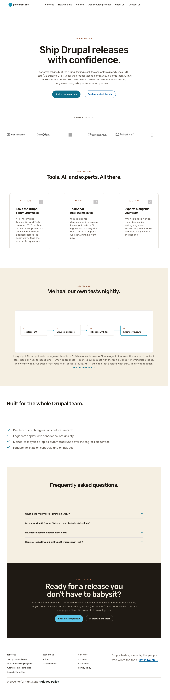

Diff PNG (red = differing pixels)
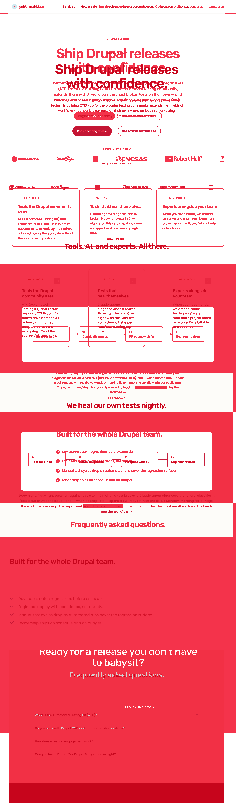
Side-by-side composite (live | preview)
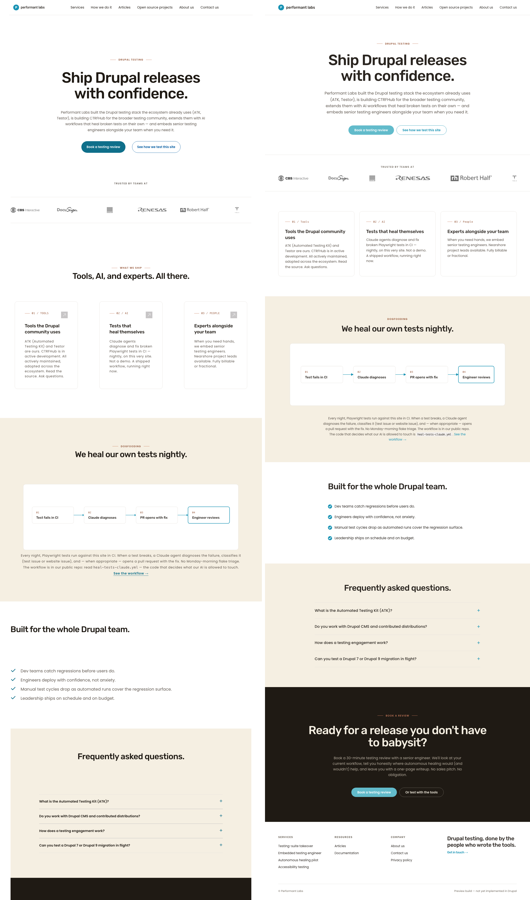
Wipe-slider comparator — 768×1024
Pixels differing: 1,925,460 / 3,766,272 = 51.12% (whole-page; vertical cascade).


Diff PNG
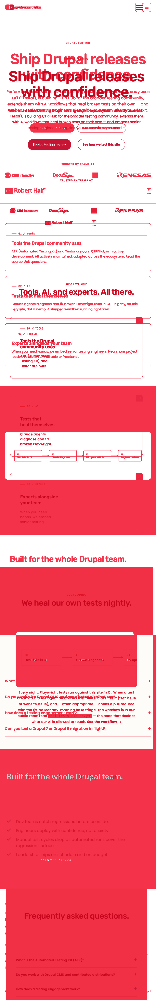
Side-by-side composite
Wipe-slider comparator — 375×667
Pixels differing: 1,256,820 / 2,311,125 = 54.38% (whole-page; vertical cascade).


Diff PNG
Side-by-side composite
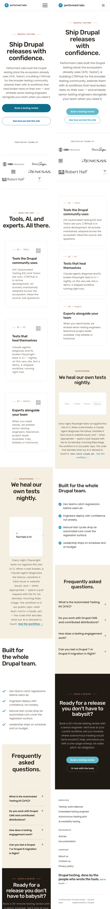
Section crops — focused evidence per item
Item 2 — FAQ accordion at 1280 (closed = +)
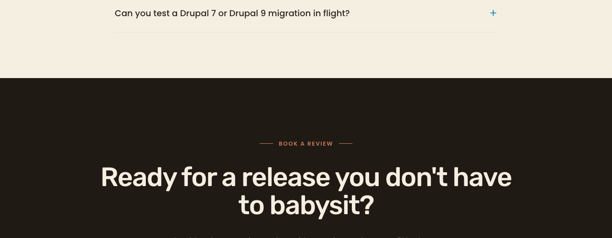
Item 5 — Hamburger button at 375 (bordered, 8 px radius)
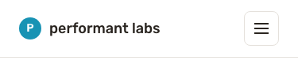
Item 1 — Footer column links at 1280 (sentence case)
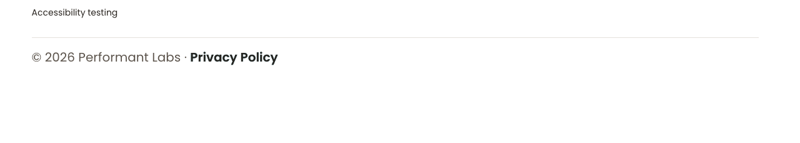
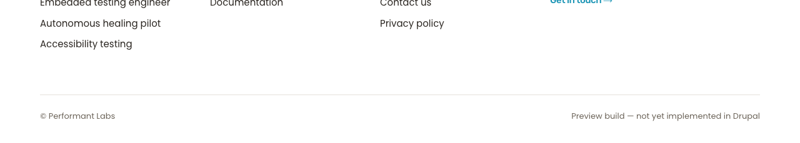
Item 3 — Footer-CTA primary pill (no arrow)
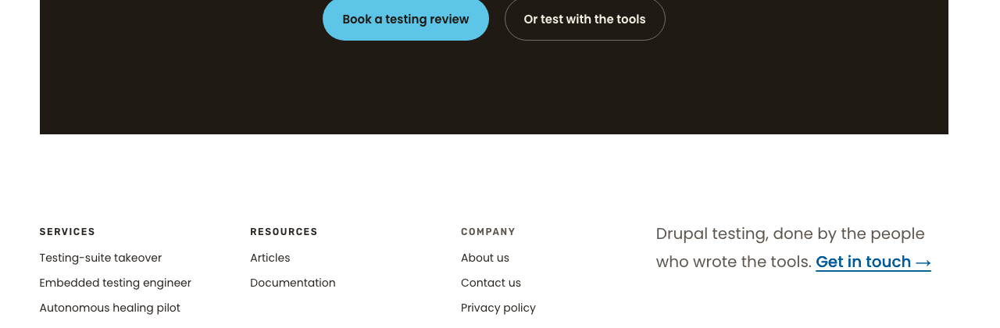
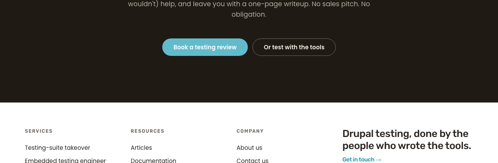
Item 4 — Built-for-the-team checklist (terminal periods)
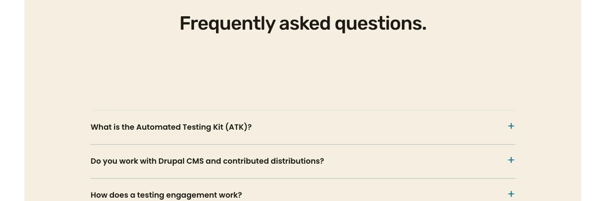
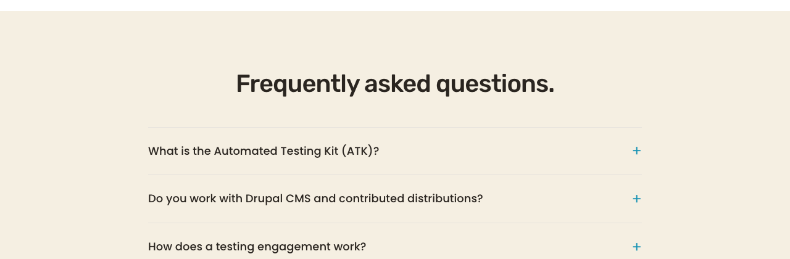
Item 6 — Header nav cluster at 1280 (REWORK)
"Services" left edge at x=342, "Contact us" right edge at x=1054.
"Services" left edge at x=536, "Contact us" right edge at x=1214.
Logo position is essentially identical between live (x=101) and preview (x=103). The 160–194 px delta is entirely in the nav cluster's horizontal alignment. F's handoff measured the logo position, not the nav position — the cited 7 px sub-threshold is an artifact of measuring the wrong feature.
Regression — header at 1280 (no pill, sentence-case nav)
Regression — hero band at 768 (no horizontal overflow, tight transition)
Regression — feature cards at 768 (1-col stack of 3)
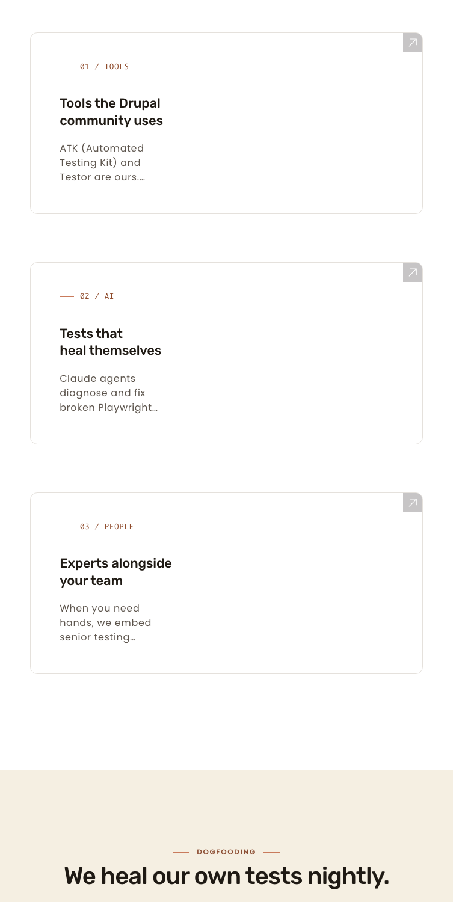
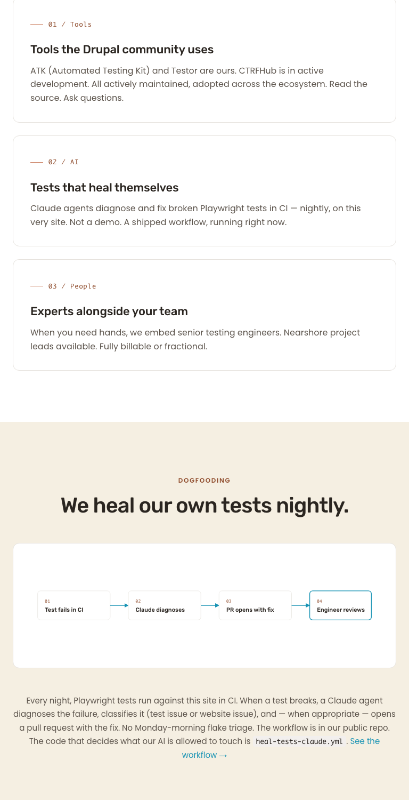
Required rework
-
Item 6 — header nav-cluster alignment at 1280.
- Branch:
aa/pl-homepage-phase-8.6.1-nav-cluster-offset - Problem: Live header places nav cluster immediately after the logo (left-aligned cluster pattern); preview places nav right-aligned to a 1200 px container. Measured delta: 160 px (right edge) to 194 px (left edge).
- F's measurement error: F's container-width arithmetic measured the logo's left edge, where the values agree within ~2 px. The visible offset is in the nav cluster on the right side of the header.
- Likely fix: L5 in
header.css— adjust the header inner container's flex distribution (likelyjustify-content: space-betweenon a wrapper) or addmargin-inline-start: autoto the nav block so it pushes to the right of the container. - Operator decision needed: confirm preview alignment is canonical for the header nav before F traces neonbyte header layout.
- Branch:
Items 1, 2, 3, 4, 5 all pass and need no further work in the rework branch. Do not unwind the accordion (item 2) or hamburger-border (item 5) CSS — both verified visually matching preview.